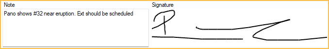
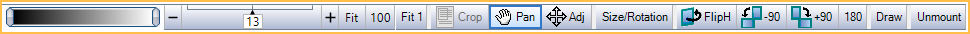
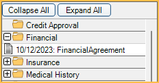

Imaging Module
The Imaging Module is a place to scan and store most images, radiographs, forms, and letters that are traditionally stored in a paper chart.

Open Dental supports native radiograph and image capture using supported sensors, intraoral cameras, webcams and scanners. See Sensor Compatibility, Imaging Camera Compatibility, and Scanners for additional information.
Images Toolbar
The top toolbar includes options to manage and add images.
Print: Easily print a selected image, document, or entire folder.
Scan: Easily scan single or multiple page documents. Use options for scanning radiographs or images to optimize how an image is scanned.
Mount / Acquire: Take radiographs using a connected sensor. Single or multiple images can be taken at once.
Video: Open a video feed for a connected intraoral camera or webcam. Easily capture an image from this window.
Import: Add an existing file from the current computer or network to Open Dental.
Export: Export the selected file to another location on the computer or network.
Copy: Copy the selected image to the clipboard, including drawings and annotations. Alternatively, click the dropdown to copy the image without the drawings or annotations.
Paste: Paste files or bitmaps from the clipboard into the selected mount position or image folder.
The secondary toolbar has options to edit image files.
- Windowing: Adjust windowing values. This is similar to adjusting contrast and brightness. It is helpful for radiographs.
- Zoom: Zoom in or out of a selected image. Zoom by dragging, using the +/- buttons, typing in the box, or using the mouse scroll wheel.
- Crop: Crop the selected image to a new size. The original image is retained and can be reset at a later time.
- Pan: Click to activate, then drag the image to reposition.
- Adjust: Only available for mounts. Once activated, drag to adjust an image slightly, or to move it to a different position in the mount.
- Size/Rotation: Adjust the size or rotation of an image.
- FlipH, -90, +90, 180: Quickly flip or rotate an image.
- Draw: Add drawing, text, lines, or measurements to an image. Helpful for annotating radiographs.
- Unmount: Detach an image from a mount. Useful for moving images around.
Image Categories
Files are organized in tree view by categories (folders). Folders are entirely customizable.
Specific folders can be selected to show in the Patient Portal Feature, giving patients easy access to their images.
Viewing Images
Easily view multiple images for comparison.